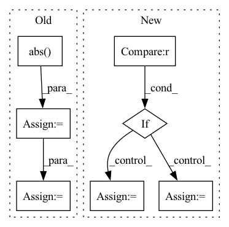

Pattern ID :34442
Before Change
loss = MultivariateNormalDistributionLoss()
target = loss.distribution_class(loc=mean, cov_diag=std**2, cov_factor=cov_factor).sample((n,))
if transformation in ["log", "log1p", "relu", "softplus"]:
target = target.abs()
target = target[:, 0]
normalizer = TorchNormalizer(center=center, transformation=transformation)
normalized_target = normalizer.fit_transform(target).view(1, -1)
target_scale = normalizer.get_parameters().unsqueeze(0)
scale = torch.ones_like(normalized_target) * normalized_target.std()
parameters = torch.concat(
[normalized_target[..., None], scale[..., None], torch.zeros((1, normalized_target.size(1), loss.rank))],
dim=-1,
)
if transformation in ["logit", "log", "log1p", "softplus", "relu", "logit"]:
with pytest.raises(AssertionError):
rescaled_parameters = loss.rescale_parameters(parameters, target_scale=target_scale, encoder=normalizer)
else:
rescaled_parameters = loss.rescale_parameters(parameters, target_scale=target_scale, encoder=normalizer)
samples = loss.sample(rescaled_parameters, 1)After Change
cov_factor = torch.tensor([[0.0], [0.0]])
n = 100000
if transformation is not None and "log" in transformation:
mean = mean.log()
std = std / 1e4
loss = MultivariateNormalDistributionLoss()
target = loss.distribution_class(loc=mean, cov_diag=std**2, cov_factor=cov_factor).sample((n,))In pattern: SUPERPATTERN
Frequency: 3
Non-data size: 7
Instances Fragment ID: 98800899
Project Name: jdb78/pytorch-forecasting
Commit Name: 09eb7856fd61cd62c765376a0b1b2400fecb4243
Time: 2022-05-14
Author: beitner.jan@bcg.com
File Name: tests/test_metrics.py
M Class Name: AnonimousClass
N Class Name: AnonimousClass
M Method Name: test_MultivariateNormalDistributionLoss(2)
N Method Name: test_MultivariateNormalDistributionLoss(2)
M Parent Class:
N Parent Class:
M File Name: tests/test_metrics.py
N File Name: tests/test_metrics.py
M Start Line: 197
M End Line: 214
N Start Line: 192
N End Line: 205
Before Change
normalized_feature_importance_values = model.feature_importances_/model.feature_importances_.sum()
feature_importances = pd.Series(normalized_feature_importance_values, index=dataset.features())
elif "coef_" in dir(model): // Linear models
coef = np.abs( model.coef_)
coef = coef / coef.sum()
feature_importances = pd.Series(coef, index=dataset.features())
else: // Others
feature_importances = _calc_importance(model, dataset)After Change
dataset.validate_model(model)
feature_importances = _built_in_importance(model, dataset)
if feature_importances is None :
if isinstance(model, Pipeline):
// Assume model is last
final_estimator = model.steps[-1][1]
if isinstance(final_estimator, BaseEstimator):
feature_importances = _built_in_importance(final_estimator, dataset)
else:
feature_importances = _calc_importance(model, dataset)
else: // Others
feature_importances = _calc_importance(model, dataset)
Fragment ID: 98800930
Project Name: deepchecks/deepchecks
Commit Name: f3a2bb3ed3c3b64ddc2c53344531740656f50876
Time: 2021-11-21
Author: noamzbr@gmail.com
File Name: deepchecks/feature_importance_utils.py
M Class Name: AnonimousClass
N Class Name: AnonimousClass
M Method Name: calculate_feature_importance(2)
N Method Name: calculate_feature_importance(2)
M Parent Class:
N Parent Class:
M File Name: deepchecks/feature_importance_utils.py
N File Name: deepchecks/feature_importance_utils.py
M Start Line: 51
M End Line: 61
N Start Line: 54
N End Line: 66
Before Change
k = min(k, len(num_col_names))
num_data = df[num_col_names]
num_data = num_data.fillna(0)
abs_corr = num_data.corr()[target].abs()
top_k = abs_corr.sort_values(ascending = False)[1:k].index.values.tolist()
return top_k
After Change
def get_candidate_numerical_feature(df, target, k):
num_col_names = get_numerical_columns(df, target)
if df[target].dtype == "float" :
select_model = SelectKBest(mutual_info_regression, k=k)
else:
select_model = SelectKBest(mutual_info_classif, k=k)
X = df[num_col_names]
y = df[target]
slect_feature_cols = select_model.fit(X, y).get_feature_names_out() Fragment ID: 98800897
Project Name: jianzhnie/autotabular
Commit Name: c04a58c146a58c659d5df8dc70a02ba8ed007f18
Time: 2021-10-15
Author: jianzhnie@126.com
File Name: autofe/feature_engineering/groupby.py
M Class Name: AnonimousClass
N Class Name: AnonimousClass
M Method Name: get_candidate_numerical_feature(3)
N Method Name: get_candidate_numerical_feature(3)
M Parent Class:
N Parent Class:
M File Name: autofe/feature_engineering/groupby.py
N File Name: autofe/feature_engineering/groupby.py
M Start Line: 20
M End Line: 27
N Start Line: 25
N End Line: 32